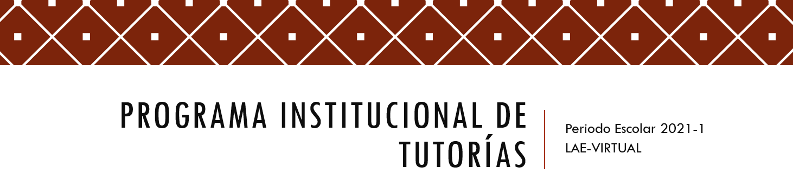
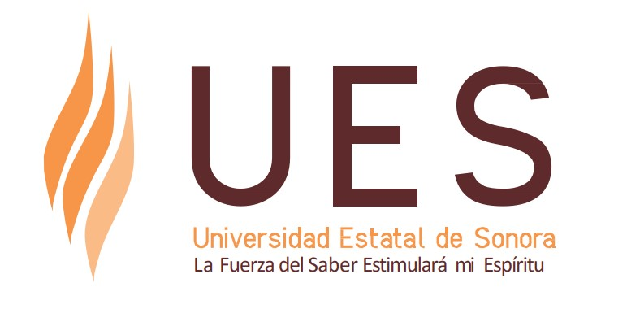

La Universidad Estatal de Sonora a través del trabajo de un grupo interdisciplinario coadyuva a que sus estudiantes logren una trayectoria escolar satisfactoria. Para lograrlo, se han incorporado como un complemento a la metodología de aprendizaje, diversos programas de apoyo estudiantil divididos en las áreas de Atención Académica, Formación Integral y Bienestar Estudiantil.
Los Programas son independientes, pero interrelacionados de forma que se puedan establecer mecanismos de acción vinculados horizontalmente entre estos, para dar seguimiento a todos los estudiantes de manera integral desde su ingreso hasta el egreso.
Entre ellos, se encuentra el Programa Institucional de Tutoría (PIT) que brinda un acompañamiento integral al estudiante durante su estancia en la universidad, para propiciar condiciones más favorables que contribuyan a su formación.
